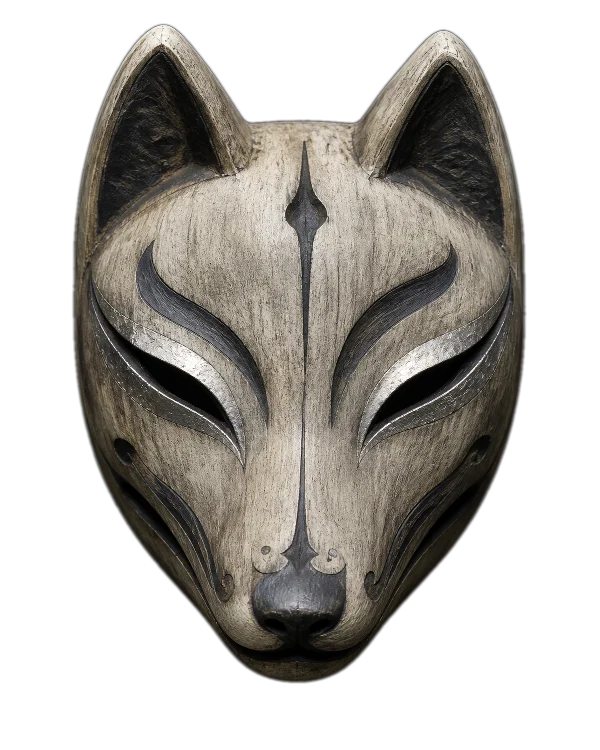
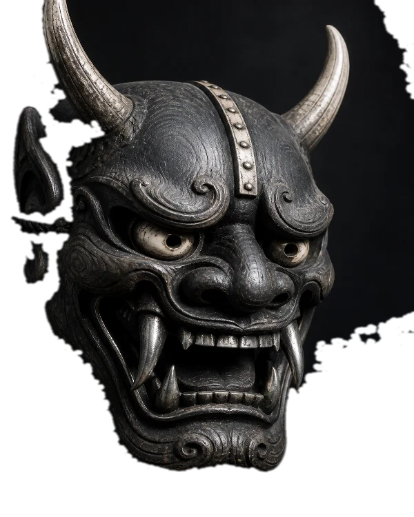
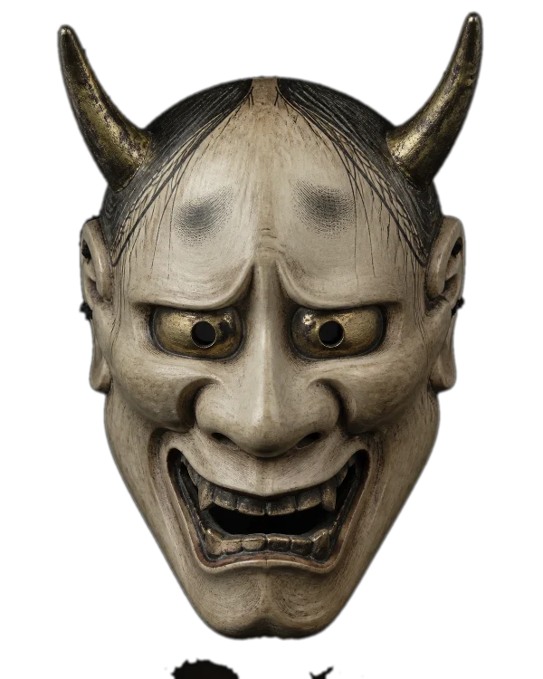

NO. 001 · 稲荷 / INARI

A face can hide a thousand stories.
A mask lets them breathe.
Long before a face became a performance, it became a vessel. Across generations, Japanese masks carried the weight of spirits, stories, and transformations. They were never merely worn. They were awakened.

Carved from seasoned wood, layered with mineral pigments, and finished by hands that understand restraint. Every contour holds a decision. Every imperfection remembers the maker.

